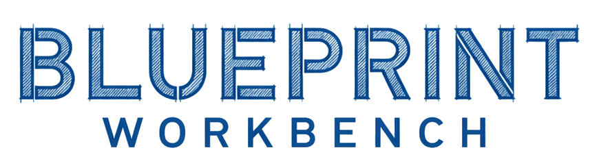

Thirty years transforming technology organizations at global scale. Fractional CIO/CTO, AI-led transformation, organizational change — and the engineering team to build whatever the strategy calls for. From cloud platforms to building systems to agentic AI.
How agents coordinate, where memory lives, which models handle which tasks, how humans stay in the loop. Deliverables your team can build from — or that we can build for you.
We write the code, wire the infrastructure, ship the product, and keep it running. Python, TypeScript, Node.js, Go. LangGraph, MCP, Anthropic, Google, OpenAI.
Network, servers, WiFi, structured cabling, routers, firewalls. Camera systems and access control. UPS and generator backup. HVAC controls and facility automation. The stack agentic software actually runs on.

Run Claude Code, Google Gemini, and OpenAI Codex concurrently. Organized by project, persistent across sessions, all from a browser. Full terminal access, semantic search, task tracking, MCP tool registry.
Self-hosted in Docker. Single-user by design. The same workbench we use for nearly all of our daily task work, coding or otherwise — published under MIT so you can run it too.
Read more →Milton Hilton runs a 240,000 square foot multi-tenant commercial building in Massachusetts. Four co-located businesses. We delivered the entire technology stack.
Building-wide network and WiFi with tenant segmentation. Managed switching, servers, routers, firewalls. Full IP camera system. Access control for every tenant profile. UPS infrastructure and a generator capable of carrying the full building through extended outages.
Then the differentiator — an agentic industrial HVAC system. We designed the mechanical and electrical, specified the control hardware, wired the sensor network, and wrote the multi-agent control software that runs it. Production, 24/7.
Read the case study →Web workbench for AI agents. Claude, Gemini, Codex — one browser, persistent sessions, integrated tools.
Context Broker for durable conversational memory. Modular Agent Host for hot-pluggable agent orchestration. Run one or both.
Drop-in agents for Google Workspace and Microsoft 365. Gmail, Drive, Calendar, OneDrive — pip install and go.
Founded by Jason Morrissette. Thirty years leading and transforming technology organizations. Multiple CIO and CTO positions and board seats. Extensive experience with mergers and acquisitions, startups, rescues, and transformations. Most recently Global Head of Service Delivery and Customer Success at Marsh McLennan (2,000+ applications, 150,000 users, a 900+ professional matrix), and Senior Director of Technical Operations at Oliver Wyman (P&L on a $20M services business, 99.9% uptime SLAs across 200+ Fortune-500-facing applications). Startup founder — raised $9.4M to build Mill Town Agriculture from concept to revenue. Master’s degrees in Business Administration and IT Engineering. MIT certified in AI Engineering, with sixteen provisional patents in autonomous AI systems.
The practice provides services which include fractional CIO/CTO engagements, AI-led organizational transformation, technology strategy, M&A advisory, agentic and generative AI, application engineering, data engineering and analytics, and end-to-end engineering for small and medium businesses across a variety of regulated industries.
Based in Massachusetts.
Read more about us →The best way in is a short email telling us what you're trying to build — or what's gone sideways. We typically respond within one business day.